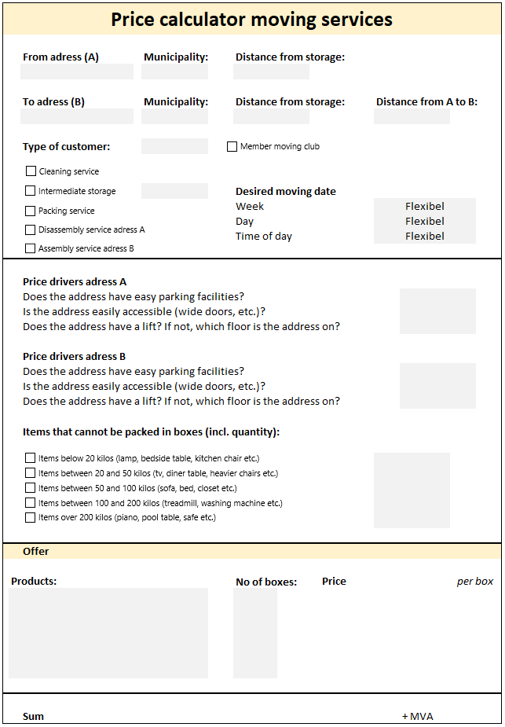
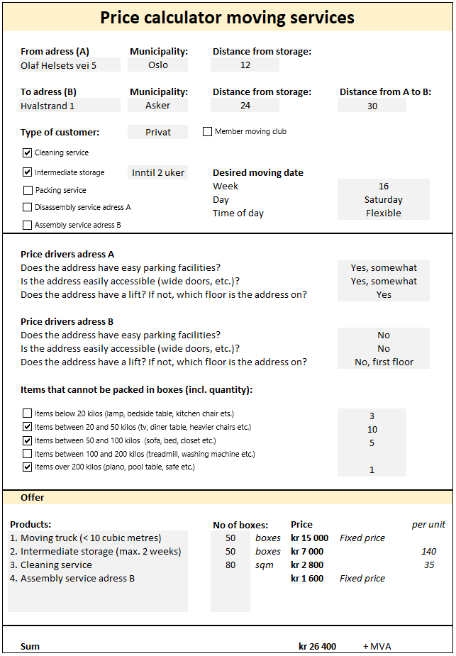

Project: Price calculator
Introduction
For a former employer, I made a price calculator that could replace manual pricing of so-called winter services like snow plowing and gritter spreading (for the private market). In this example, I have changed some variables and created a calculator for "moving services", i.e. the services a moving agency can deliver. Pricing such address-based services is often done manually, which takes time and requires employees with a lot of experience and insight. The idea behind my calculator was thus to simplify that process, and make it easier to follow a common pricing strategy which also provided a documentable price fundament. The image at the bottom left of this page shows an empty calculator, while the image at the bottom right shows the calculator with input as an example.
The calculator
My main priority when building this calculator was that it would be easy to use. Each cell that requires user input is marked in grey, and for most cells I have used different Form Controls to provide the user with answer options. Another factor that minimizes user error, is that the user must fill out all mandatory variables before indicative prices are provided. When all mandatory variables have been filled out, the combined input is calculated and indicative prices for the various services are provided as output. For this example of "moving services", there are certain factors that only affect certain services, and some that affect all services. Two factors that affect all services are the type of customer (private, business, governmental) and whether they are members of the "moving club". The same applies to the desired moving date, as moving in the weekend or in the evening results in a surcharge for most services. The price of the moving truck is mostly a result of the distance between the two adresses, but also minor factors like parking facilities at each adress. The price for the packing service on the other hand is mostly based on the number of boxes and items, while disassembly and assembly again follow fixed prices. For the intermediate storage service, the distance to and from the company's storage and the desired length of storage are also decisive.
 